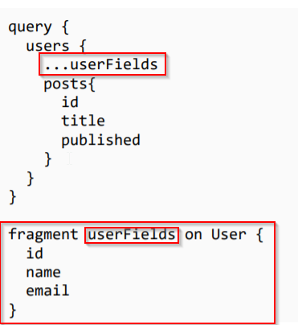

This basically provides us a resusable way to define a selection set. With gql fragments we can very easily define a type in gql playgroud and call it with...notation. Like this

As seen here we have defined a fragment called userFields as passed it to the selection set.
Now, in order to force a client to select a necessary field we can define fragments in our sever, which would ensure that the particular field is always selected.
Intregrating Prisma with GQL

STEP 1:Make a new file that hold all the resolver functctions like so

STEP 2: Import resolver & fragmentReplacements in app.js

STEP 3: In prisma.js pass fragmentReplacements to Prisma Object

Step 4: Now we actually set the value of fragements in our resolver function somewhat like this

This means that when ever someone makes a selection for posts in our user query we ensure that the selction field has got userID